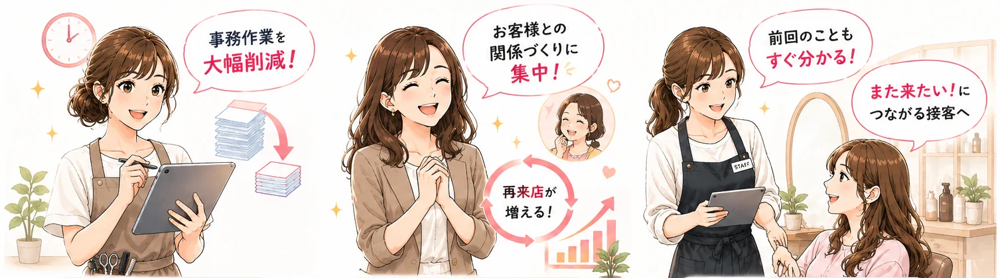
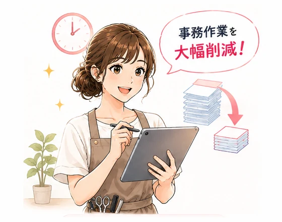
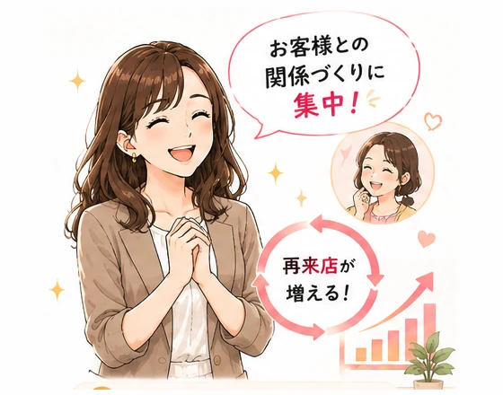
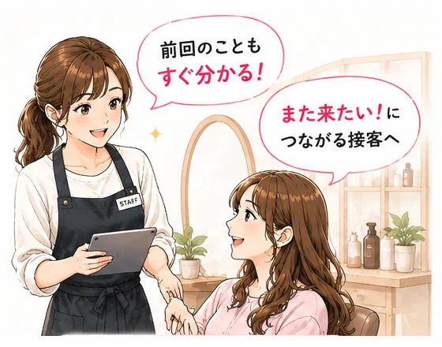
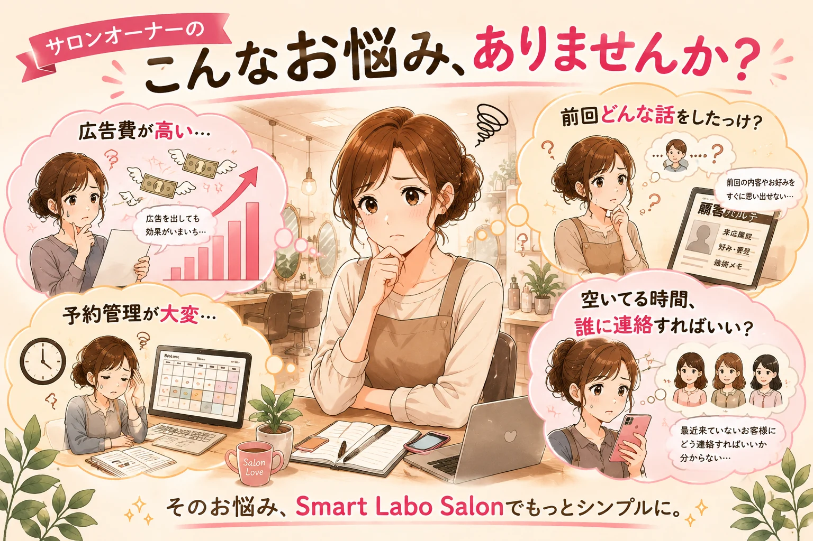

Smart Labo Salon
サロンの毎日を、
もっとスマートに。
店舗ページ・集客・予約・接客・リピートまでを
ひとつにつなぐ、サロンのためのサービス。
- 時間を生み出す
- リピーターにつなげる
- お客様満足度UP
実際の画面をご覧いただきながらご説明します。無理な営業は行いません。
先着20店舗 創業メンバー募集中
※画像はイメージです。掲載しているUIはデモ用の架空データです。
導入メリット
導入すると、こんなに変わります。

-

時間を生み出す
予約確認や顧客情報の整理をシンプルに。空いた時間を、施術や接客に使えます。
予約管理を見る -

リピーターにつなげる
来店履歴や接客メモを次回のご案内へ。今いるお客様との関係づくりを支えます。
再来店の仕組みを見る -

お客様満足度UP
前回の内容やお好みを確認して接客。担当が変わっても情報を引き継げます。
顧客カルテを見る
Smart Labo Salon でできること
- お客様の入口をひとつに 店舗ページから24時間WEB予約を受付。写真・メニュー・営業時間は管理画面から更新できます。
- 予約・管理をラクに WEB予約・手動での予約登録・予約なしのご来店を同じ画面へ。予約を受けない時間帯も設定できます。
- 接客をもっと質の高いものに 接客後の30秒メモをAIが整理し、スタッフが確認して保存。次回来店前に前回の内容が並びます。
- 再来店のきっかけをつくる 最終来店日や利用メニューで対象を絞り、LINEでスタッフが確認して1名ずつお送りします。
- お店の状況を数字で把握 予約・来店・新規／再来店などを件数で確認。PIN保護・CSV書き出し。※売上金額の分析は含まれていません。


※掲載画面はデモ用の架空データです。
Smart Labo Salon の考え方
「待つ集客」から 「攻める集客」へ。
広告を出して予約が入るのを待つのではなく、 いまいらっしゃるお客様の記録を活かして、店舗の側から再来店のきっかけをつくります。
- 予約に空き 空いている時間がひと目で分かります。
- 再来店候補 最終来店日・回数・メニュー・担当などで絞り込み。予測ではなく記録された事実だけを使います。
- 店舗が選ぶ 誰に送るかを決めるのはスタッフ。AIが作るのは共通の文案までで、お名前・ご連絡先はAIへ渡しません。 人が決める
- LINEで案内 人数と本文を確認し、二段階の確認を経て1名ずつ個別に送ります。 人が送る
- 予約 店舗ページからそのままご予約いただけます。
- 来店・記録 その日の接客メモが顧客カルテに残ります。
- 次回の接客へ 前回の内容が、次のご来店前に表示されます。
送るかどうかは、必ず人が決めます。
AIが対象を選んで自動で送ることはありません。
※一斉配信・自動配信は行えない仕組みです。
※LINEでのご案内には、店舗のLINE公式アカウントのご契約・接続設定と、お客様との連携が必要です。
ご契約内容によりメッセージ通数としてカウントされる場合があり、LINE側の料金は店舗のご負担となります。
ご利用の開始にあたっては、導入時に当社と利用開始確認を行います。
サロンオーナーの こんなお悩み、ありませんか？

料金プラン
月額14,800円（税別）
（税込16,280円）
- Salon初期費用：0円
- 価格保証：24ヶ月
- 25ヶ月目以降はその時点の Standard 通常価格へ移行
- 年間一括：148,000円（税別）（月払い10ヶ月分相当）
- 最低契約期間：6ヶ月
月額19,800円（税別）
（税込21,780円）
- Salon初期費用：30,000円（税別）
- 年間一括：198,000円（税別）（月払い10ヶ月分相当）
- 最低契約期間：6ヶ月
- ご利用いただける機能は創業メンバープランと同じです
50,000円〜（税別）
Salon初期費用とは別です
- 5〜10程度の標準デザインパターン
- スマホ対応・SSL対応・SEO基本対策
- Salonとの導線設計
- 最大5ページ相当・修正2回まで
- 標準範囲を超える構成・機能・個別デザインは追加見積り
※お支払いはクレジットカードによる月額自動決済を標準としています。初月の日割りはありません。 LINE公式アカウントのご契約料金・メッセージ通数の料金は月額に含まれず店舗のご負担となります。 契約条件の詳細は、ご契約前に契約書と料金確認書でご説明します。
ホームページ制作
ホームページから、集客の仕組みをつくる。
「作って終わり」にはしません。お客様が見つけてから、また来ていただくまでを1本につなげます。
- ホームページ
- お問い合わせ
- WEB予約
- ご来店
- 顧客カルテ
- 再来店
店舗ホームページ制作は 50,000円〜（税別）の別サービスです。基本範囲は料金プランに記載しています。
導入までの流れ
ご相談から、運用開始まで。
初期設定は当社が行います。パソコンの設定作業をお願いすることはありません。
-
無料相談・ヒアリング
いまのお店の進め方とお困りごとを伺います。実際の画面をご覧いただきながらご説明します。
-
ご提案・お見積り
必要な機能と導入の進め方をご提案します。料金・契約条件もこの段階でご説明します。
-
ご契約・お手続き
契約書と料金確認書、個人情報の取扱いについてご確認いただきます。
-
初期設定
店舗情報・メニュー・スタッフ・営業時間などを当社が設定します。いまお使いのホームページを活かした導入にも対応します。
-
操作説明・運用開始
操作説明（標準1回）を行ったうえで運用を開始します。お客様の情報は、同意のお手続きが済んでから登録します。
-
導入後サポート
運用開始後も、メールとフォームでご相談いただけます（平日10:00〜18:00・土日祝と年末年始を除く）。
よくある質問
よくある質問
はい。接客のあとのメモはスマートフォンから短い文章で入力でき、日々の操作は「予約を受ける」「来店にする」「メモを残す」が中心です。
導入時に初期設定を当社が行い、操作説明（標準1回）も行います。ご利用開始後は、メールとフォームで平日10:00〜18:00にご相談いただけます。
はい。いまのホームページを残したまま、Smart Labo Salon の店舗ページを予約の受け口として使う形でも導入できます。いまのホームページから店舗ページへリンクしていただく形が基本です。
独自ドメインのホームページを新しく作りたい場合は、別サービスの店舗ホームページ制作としてご相談ください。
はい、承ります。店舗ホームページ制作は 50,000円〜（税別）で、Smart Labo Salon の月額とは別のサービスです。内容により金額が変わるため、まずはご相談ください。
店舗のLINE公式アカウントと接続し、連携済みのお客様へ再来店のご案内をお送りする機能を標準機能としてご用意しています。最終来店日・ご来店回数・受けたメニュー・担当・今後のご予約の有無などで対象を絞り、AIが共通の文案を作り、スタッフが人数と本文を確認したうえで1名ずつお送りします。
一斉配信や、AIが自動で送ることはできません。LINE公式アカウントのご契約とメッセージ通数の料金は店舗のご負担です。開封率・反応率の分析や配信の自動化は含まれていません。
ご利用の開始にあたっては、導入時に当社と利用開始確認を行います。
最低契約期間は6ヶ月です。満了後は1ヶ月単位で自動更新となります。解約は、解約をご希望の月の前月末日までに当社所定の方法でお申し出いただく形です。
解約条件の詳細は、ご契約前に契約書と料金確認書で必ずご説明します。
美容室・サロンでのご利用を想定して作っています。エステ・ネイル・リラクゼーションなど、ご予約とお客様の記録を扱う店舗でもお使いいただける場面がありますが、運用の流れによって合う・合わないがあります。
まずは今の進め方をお聞かせください。合わない場合は、その旨を正直にお伝えします。
お名前・電話番号・メールアドレス・住所・内部の管理番号はAIへ送りません。AIへ送るのは、接客メモの本文や、確認済みのお客様の記録、店舗の公開情報です。
AIが作った結果は必ずスタッフが確認してから登録され、自動で記録されたり公開されたりすることはありません。AIへ送った文章・返ってきた文章は保存していません。
その他のサービス 店舗ホームページ制作 Smart Labo Works（法人向け）
運営：株式会社スマートラボ会社情報を見る